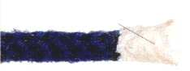
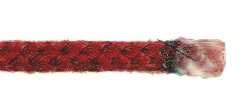
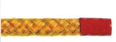
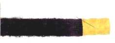
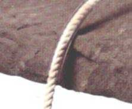
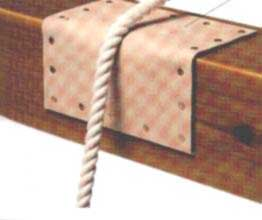
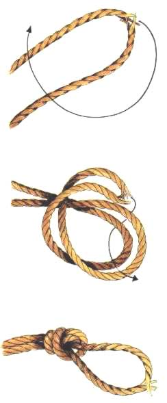

Knopenonderhoud
Het is belangrijk om uw touw in goede conditie te houden zodat u erop kunt vertrouwen dat u er effectief en veilig knopen in kunt leggen. Touw onderhouden spaart ook geld uit, omdat de levensduur van het touw langer wordt als u het beschermt. In een goed onderhouden touw legt u gemakkelijk knopen die ook beter blijven zitten.
- Touw schoonmaken
Zand, gruis en olie slijten van binnenuit. Om dit te voorkomen, schrobt u vuil touw af met een zeepsopje. Hang het touw daarna op en berg het pas op als het helemaal droog is.
- Uiteinden van touw afbinden
Voorkom dat een afgesneden eind van een touw (=tamp) gaat uitrafelen met een permanente of een tijdelijke takeling. Een afgesneden eind van een synthetisch touw kunt u in een vlam houden, zodat de vezels aan elkaar smelten.Vloeibare takeling

Er zijn speciale vloeibare takelingen verkrijgbaar. Om het eind van een touw dicht te smelten, doopt u het in een vloeibare takeling en laat het kort drogen.Lijm

Doop touw met een kleine diameter in een lijm op latexbasis of in polyvinylacetaat lijm. Laat het drogen. Dit vormt een effectief zegel aan de tamp.Plastic buis

U kan ook een plastic mantel als takeling gebruiken. Schuif de buis over het eind van een touw en houd hem boven hete stoom, zodat hij een strak zegel vormt.Plakband

Wikkel plakband om een tamp, zodat hij stijf wordt. Handig bij het leggen van knopen en wanneer u de strengeindjes insteekt om ze te splitsen.
- Het voorkomen van slijtage

Wanneer een touw herhaaldelijk langs een ruw oppervlak schuurt, ontstaat er slijtage waardoor het touw beduidend zwakker wordt op dat punt. Om schuren te voorkomen, moet u het touw beschermen door of het touw, of het oppervlak af te dekken. Probeer nooit veel kracht te zetten op een touw dat versleten is.
Touw bedekken : Een plastic buis kan een effectieve bescherming zijn voor een touw dat tegen een ruw oppervlak schuurt. Schuif een nauwsluitende plastic buis, die langer is dan het stuk touw dat schuurt, over het touw.
Oppervlak bedekken : U kan ook het oppervlak bedekken waarlangs het touw schuurt. Bevestig een stuk glad, slijtvast materiaal, zoals leer, tegen het oppervlak, op de plek waar het touw ermee in contact komt. Jute of canvas, dat tussen een touw en een oppervlak wordt gelegd, voldoet ook.
- Het gebruik van knopen

Verlicht de druk op een versleten stuk touw door het in een trompetsteek te knopen. Het versleten deel moet de middelste torn van de knoop vormen. De aangespannen buitenste tornen vangen nu de druk op.(fig7)
Een andere knoop, die hetzelfde doel beoogt als de trompetsteek, lijkt veel op de halve knoop en is dan ook erg eenvoudig. Hij wordt gebruikt voor trossen die op het punt staan te breken of die ingekort moeten worden. Als deze knoop goed is aangetrokken, is hij behoorlijk veilig. De knoop wordt snel gemaakt en is gemakkelijk te onthouden. Zijn enige nadeel is dat hij, als er erg veel druk op gestaan heeft, moeilijk los te krijgen is. De tros wordt dubbel gevouwen zodat er een bocht ontstaat met in het midden het beschadigde punt. Men slaat een oog en steekt het beschadigde deel van de tros er doorheen. De tros en de knoop worden aangetrokken, waarbij het beschadigde deel in de gevormde lus zit zodat er bij het spannen van de tros geen druk op komt te staan.
